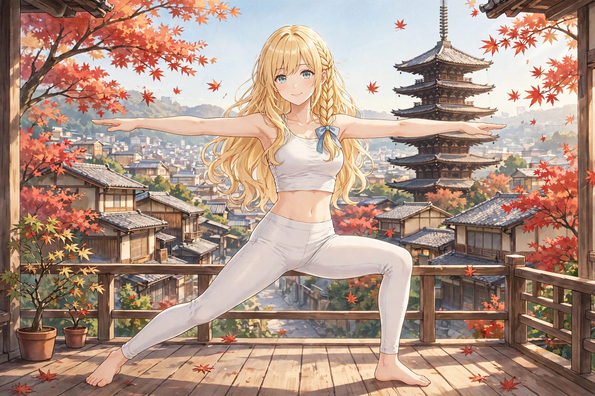

ホットヨガスタジオ LAVA 京都四条烏丸店
ホットヨガ四条烏丸男女共用
男女共用のホットヨガ専門店です。60分のレッスンが中心で、初心者向けから部位・目的別のクラスまで種類が多く、個室シャワーを備えています。定休日は毎週火曜です。…

京都でヨガスタジオを探すとき、まず決めたいのは「どのエリアで通うか」です。このポータルで掲載中の京都府のスタジオは8店。四条烏丸・河原町・三条寺町など中心部に集まり、北山にも少人数制の店があります。この記事では、掲載データをもとにエリアごとの傾向と、目的に合った選び方を整理しました。
京都の掲載店8店のうち、半数以上が四条烏丸・河原町エリアにあります。ホットヨガ専門のLAVA京都四条烏丸店は阪急「烏丸駅」から徒歩1分で、男女共用、60分のレッスンが中心です。女性専用のロイブ京都河原町店は阪急「京都河原町駅」から徒歩3分で、ホットヨガのほかピラティスやエクササイズ系のプログラムもあります。四条河原町のスタジオ・ヨギー 京都はヨガ・ピラティス・骨盤ワークを組み合わせる常温スタジオで、段階別のクラスが特徴です。同じ四条烏丸にはテラスヨガスタジオもあり、クラシカルヨーガやフロー系に加え、ピラティスやヤムナボディローリングのクラスもあります。通いやすさと選択肢の多さで選ぶなら、この中心部がまず候補になります。
三条寺町のTAMISAは2005年創業の地元スタジオで、ハタヨガ、ヴィンヤサ、陰ヨガ、瞑想系など多様なスタイルを毎日開講し、ヴィーガンカフェとショップを併設しています。三条大宮のマイソール京都はアシュタンガヨガを伝統的なマイソール形式で行う専門スタジオで、平日朝のマイソールクラスのほか、段階別のハタヨガクラスもあります。四条大宮のカルド四条大宮店は最大50名規模のホットヨガスタジオで、レッスンは事前予約不要と案内され、常温スタジオのプログラムも併設しています。自分のペースで深めたい人はこのエリアが候補になります。
地下鉄烏丸線「北山駅」から徒歩3分のヨガスタジオ TADATADA（只々）は、北山の少人数制スタジオです。呼吸を軸にしたクラス構成で、やさしいヨガ、スローフローヨガ、アシュタンガヨガのビギナー／マイソールがあり、オンライン受講もできます。事前予約制です。中心部の賑わいから少し離れて、静かな環境で通いたい人に向いています。
京都の掲載店では、ホットヨガはLAVA京都四条烏丸・カルド四条大宮・ロイブ京都河原町の3店。温かいスタジオでたっぷり汗をかく感覚が好きな人に向いています。常温はスタジオ・ヨギー 京都・TAMISA・テラスヨガスタジオ・マイソール京都・TADATADAの5店で、少人数制や専門性の高い店が多く、自分のペースでポーズを確認しながら進めたい人に合っています。迷ったら、まず体験レッスンで室温の感じを確かめるのがおすすめです。
掲載店の体験は、LAVA京都四条烏丸とロイブ京都河原町が0円（手ぶらセット付き・対象条件あり）、カルド四条大宮は初回体験0円の案内が公式サイトにあります（対象外店舗あり）、スタジオ・ヨギー 京都が通常1,000円、TADATADAが1,500円、テラスヨガスタジオが2,200円、TAMISAが体験チケット1回3,300円など、始めやすい価格がそろっています（いずれも公式記載の要約で、条件は公式サイトで確認してください）。マイソール京都は初回のみの3回トライアル6,000円です。服装や持ち物は体験の案内に従えばよく、最初から道具をそろえる必要はありません。
男女共用のホットヨガ専門店です。60分のレッスンが中心で、初心者向けから部位・目的別のクラスまで種類が多く、個室シャワーを備えています。定休日は毎週火曜です。…
女性専用のホットヨガスタジオです。2026年6月に現在地へ移転オープンしました。ホットヨガのほかピラティスやエクササイズ系のプログラムもあり、定休日は毎週月曜です。…
ヨガ・ピラティス・骨盤（ペルヴィス）ワークを組み合わせる全国展開のスタジオです。ヨガはビギナー／フロー／アライメント／リラックスなど段階別に分かれています。…
2005年創業の地元スタジオです。ハタヨガ、ヴィンヤサ、陰ヨガ、瞑想系など多様なスタイルを毎日開講し、ヴィーガンカフェとショップを併設しています。…
アシュタンガヨガを伝統的なマイソール形式（各自のペースで練習し個別に指導を受ける形）で行う専門スタジオです。平日朝のマイソールクラスのほか、段階別のハタヨガクラスもあります。…
北山の少人数制スタジオです。呼吸を軸にしたクラス構成で、やさしいヨガ、スローフローヨガ、アシュタンガヨガのビギナー／マイソールがあり、オンライン受講もできます。事前予約制です。…